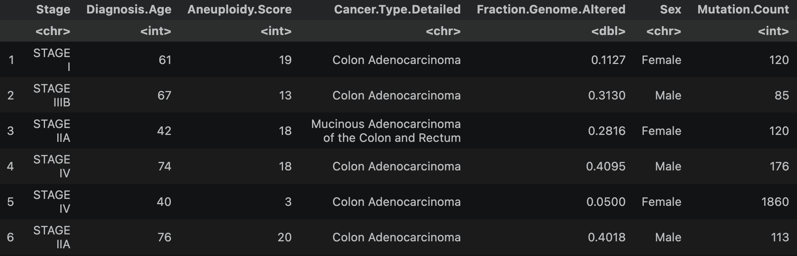
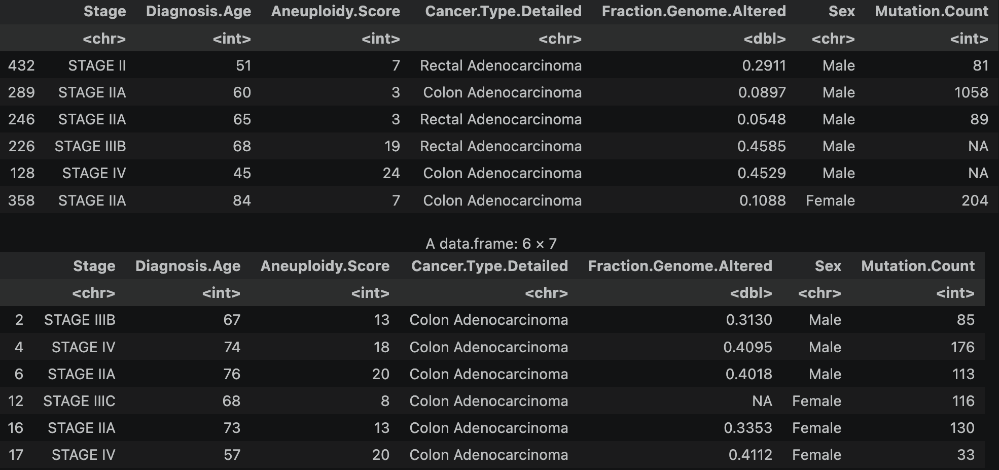
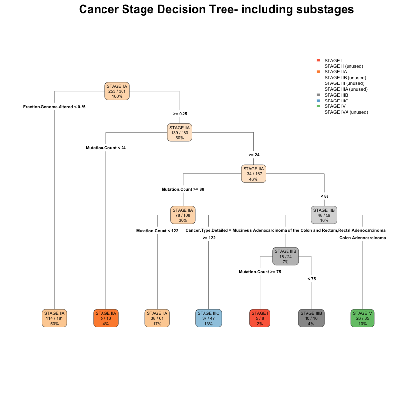
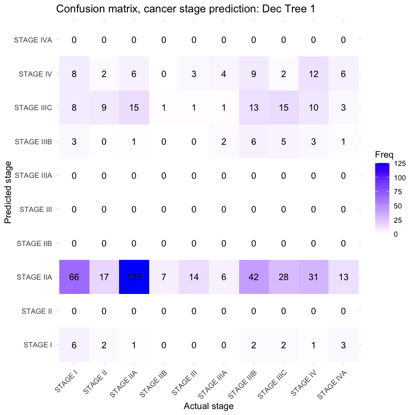
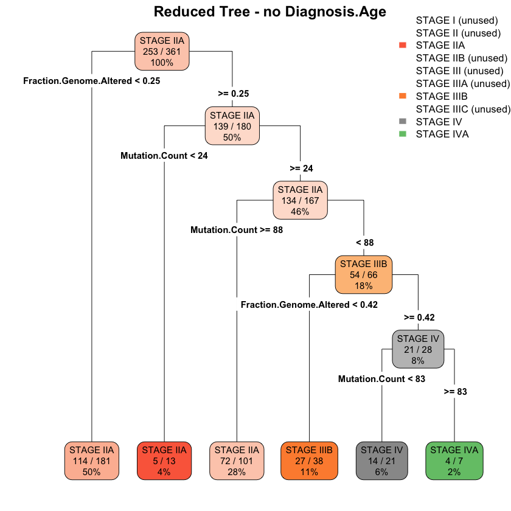
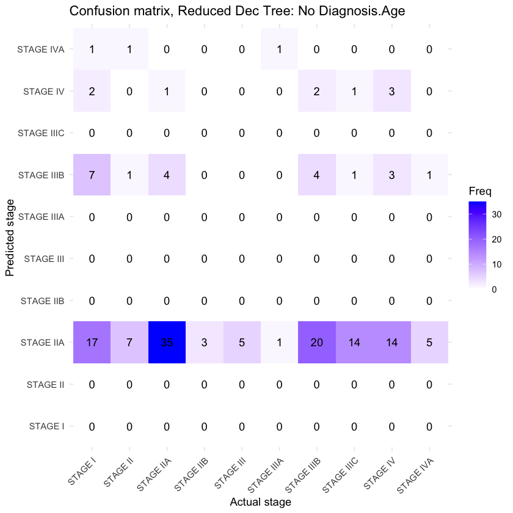
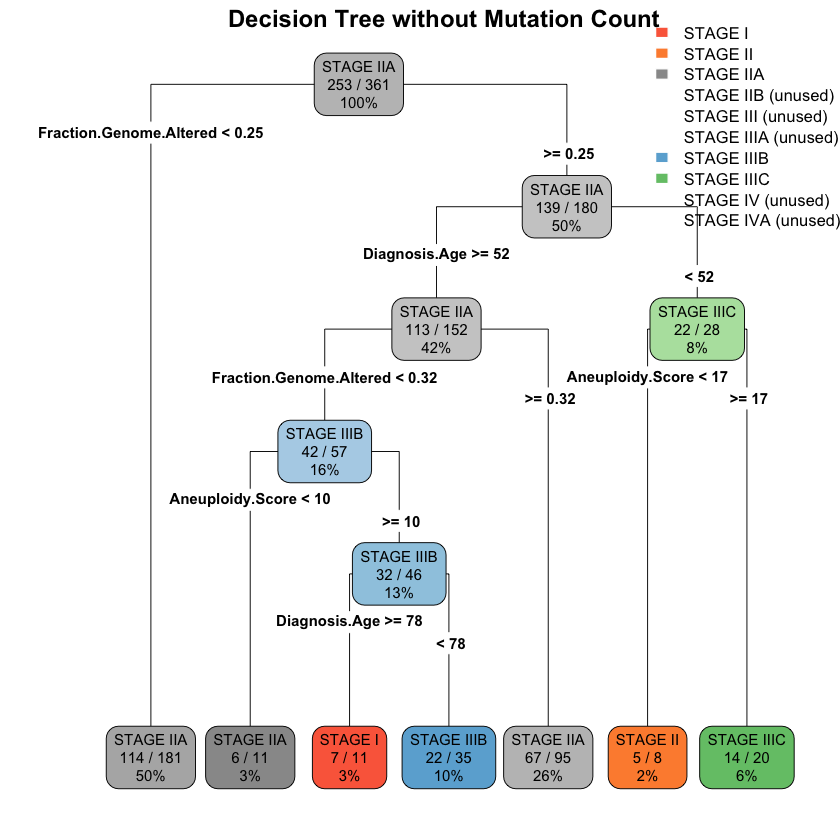
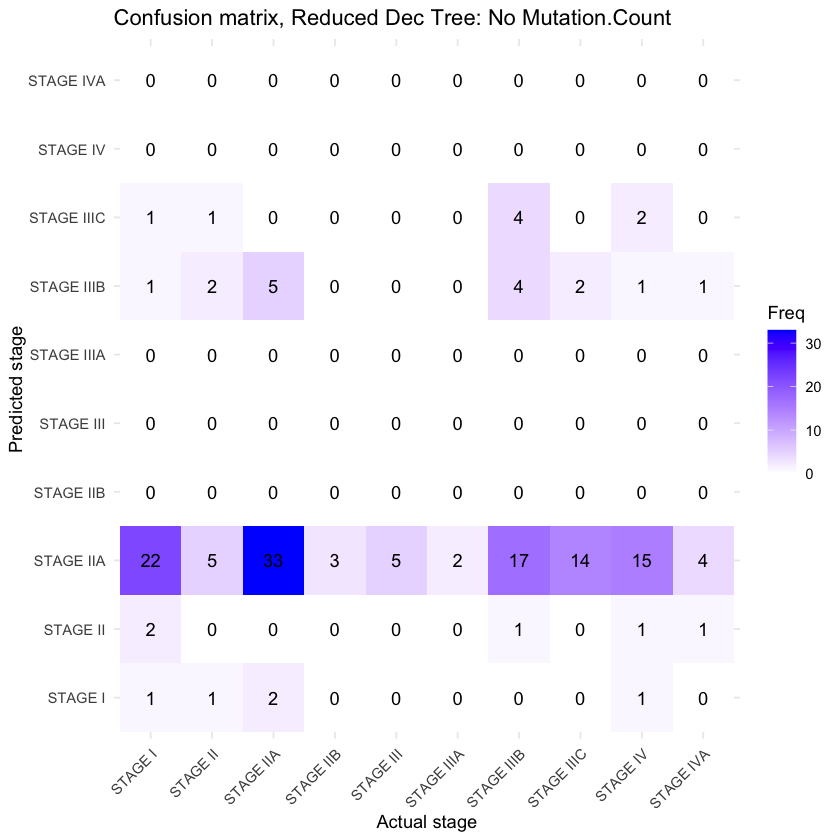
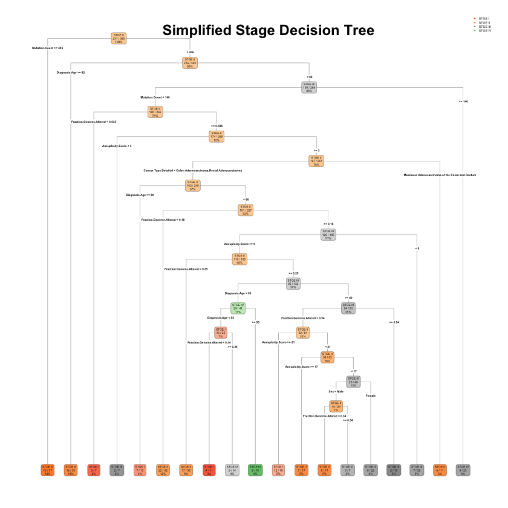
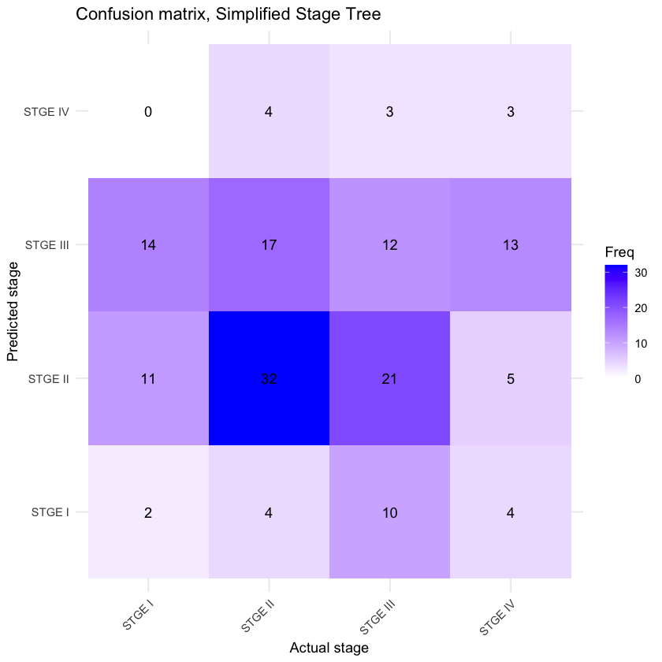

Decision Trees
Overview
Decision Trees are a type of supervised learning algorithm used for classification and regression tasks.
They work by recursively splitting the data in to smaller subsets based on a 'test', i.e. a conditional split on a particular feature. These splits
are usually binary to limit complexity and overfitting, which decision trees are prone to anyway. In the tree, the nodes
represent the tests, and the branches represent the outcomes of the test for a given data point. The leaf (i.e. terminal) nodes
indicate the prediction for that data point.


The Gini index is another way to measure this, instead calculating the probability of misclassificaition vis-a-vis the idea of node 'purity'- how many
data points are misclassified by applying a particular conditional split. The Gini index is calculated by subtracting the sum of the squared probabilities
of particular outcome in a post-split group.
Because of the various metrics available, the different ways to subset data, and the different possible conditions for splitting the data,
creating an infinite number of decision trees is technically possible (given continuous feaures or unbounded data). Even in practice, with
finite datasets, the number of possible trees can still be extremely large.
Data Preparation
The data for this decision tree model is the same as used in the Naive Bayes model, to allow a comparison between the classification methods. Clinical data with cancer stages fromt the TCGA was used for this analysis. To prepare the data, the prevously prepared TCGA dataset was read back in to R, maintaining the same column subset selection as for Naive Bayes. The data was then divided into disjunct training and test sets so the model can be evaluated, with 70% of the data used for training and 30% reserved for testing, using R's `sample` function, which randomly selects rows. The same random seed was used to ensure reproducibility and enable an accurate comparison to the NB model. As some stages were not represented sufficiently in the dataset to be present in both training and test data, only those found in both sets were retained. A disjunct training and test set is critical for accurately evaluating the model. If the model is trained on the evaluation data, the ability to detect overfitting is compromised, and the results may not reflect actual performance.

Train/test split example (note that the same split has been applied as to the Naive Bayes model, by using the same random seed. This way the results are more directly comparable.)
{kind=link}

The prepared data can be found here: Train Data and Test Data.
Code
The Jupyter notebook can be found here. The HTML notebook can be found here.Results
The first decision tree model, classifying all the represented stages in the training set, achieved an accuracy of 31.8%, much better than the NB's 9.09%.{kind=link}

{kind=link}

{kind=link}

{kind=link}

{kind=link}

{kind=link}

As the Naive Bayes model achieved much higher accuracy when the number of possible classes was simplied to the 4 numeric class, the same was modeled with a decision tree:
{kind=link}

{kind=link}

Conclusions
There are several interesting observations to be made from this collection of trees.
It can be seen in the first set of trees that "Fraction.Genome.Altered" is the primary separator, an interesting contrast to the
"Diagnosis.Age" feature, which was the main contributor in the Naive Bayes model. "Fraction.Genome.Altered" makes more biological sense,
as the more highly altered genomes would be expected with more advanced cancer stages. When Diagnosis.Age is removed, performance drops slightly,
but the actual structure of the tree remains mostly unchanged (tree 1 vs tree 2). This suggests Diagnosis.Age was not
providing much important signal, despite the high-ranking contribution in the NB model. When Diagnosis.Age is replaced, and Mutation.Count is removed,
Diagnosis.Age appears for the first time as a decision node, indicating that it does provide some signal, but Aneuploidy.Score also becomes more
prominent. Certainly Fraction.Genome.Altered and Aneuploidy.Score would be expected to be correlated, so the tree relies more heavily on related features
to compensate for the information loss.
As discussed above, the strengths and weaknesses of each type of model become apparent with this application, and both struggle to overcome the underrepresentation
of certain classes. This suggests that the best way forward with either classifier would be to oversample the mintority classes
and weight them appropriately to balance this. Cross-validation could also be a good strategy to improve performance. Ultimately, however,
these particular features likely do not have enough signal with regard to cancer stage to be highly accurate. Certainly some of them would be expected to be correlated
with cancer stage, but it would be most interesting to incorporate histopathology data, especially in a multimodal context, using tissue images or clinical chart notes.